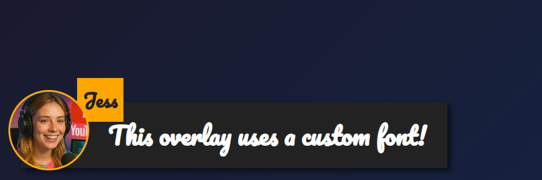

OBS 브라우저 소스, Chrome 확장 프로그램, 데스크톱 앱 어디서 로드하든 dock.html과 featured.html에 나만의 글꼴을 사용하세요.
dock.html 또는 featured.html 에 URL 매개변수 또는 OBS 사용자 지정 CSS를 사용합니다.
featured.html 오버레이에 적용: &googlefont=Pacifico 적용 — 직접 호스팅한 글꼴도 다음을 통해 같은 방식으로 작동합니다: @font-face.글꼴 파일의 직접 HTTPS 링크가 필요합니다. OBS나 앱 내부의 브라우저가 파일을 가져올 수 있도록 외부 링크 사용/CORS를 허용하는 호스트를 선택하세요.
다음으로 글꼴을 정의하세요: @font-face 로 호스팅한 파일을 가리키게 한 다음, 오버레이가 다음을 통해 이를 사용하도록 설정하세요: --font-family.
@font-face {
font-family: 'MyDockFont';
src: url('https://your-site.example/fonts/MyDockFont.woff2') format('woff2');
font-style: normal;
font-weight: 400;
}
/* Optional second weight */
@font-face {
font-family: 'MyDockFont';
src: url('https://your-site.example/fonts/MyDockFont-Bold.woff2') format('woff2');
font-style: normal;
font-weight: 700;
}
:root {
--font-family: 'MyDockFont', 'Segoe UI', 'Arial Unicode MS', sans-serif;
--comment-font-size: 28px;
--author-font-size: 24px;
--message-line-height: 32px;
}
아르메니아어 + 러시아어 + 라틴 문자처럼 여러 글꼴이 필요한가요? 각 font-face를 선언하고 다음에 나열하세요: --font-family 예: 'FontA', 'FontB', 'FontC', sans-serif. 글리프가 없으면 브라우저가 자동으로 대체 글꼴을 사용합니다.
&css=https://your-site.example/my-font.css 를 페이지 URL에 추가하세요:
https://socialstream.ninja/dock.html?session=YOURSESSION&css=https://your-site.example/my-font.css https://socialstream.ninja/featured.html?session=YOURSESSION&css=https://your-site.example/my-font.css
&css= 또는 다음으로 base64 인코딩하세요: &b64css= (두 페이지 모두 지원합니다).&font=YourInstalledFont 는 시스템 글꼴 이름을 사용하고, &googlefont=Noto+Sans+Armenian,Noto+Sans 는 직접 호스팅하지 않을 때 Google Fonts를 불러옵니다.Chrome 확장 프로그램, Electron 앱, 호스팅 사이트 모두 같은 파일을 로드하므로 이 옵션들은 동일하게 작동합니다: dock.html/featured.html 파일.
두 페이지에서 사용하는 주요 글꼴 변수:
:root {
--font-family: 'MyDockFont', 'FontB', sans-serif;
--comment-font-size: 28px; /* message text size */
--author-font-size: 24px; /* name text size */
--comment-font-weight: 600; /* featured.html */
--author-font-weight: 700; /* featured.html */
--message-font-weight: 500; /* dock.html */
--name-font-weight: 700; /* dock.html */
--comment-color: #ffffff;
--author-color: #ffe08a;
--comment-bg-color: #161616;
--author-bg-color: #202020;
}
도크 전용 추가 옵션: --stylized-emoji, --stylized-img, --text-stroke-width, --text-shadow, 행 색상(--highlight-base, --highlight-base2, 그리고 compact 변형).
강조 메시지 레이아웃 조정: 조정: --comment-width, --comment-padding, --comment-area-bottom, 그리고 --comment-area-height 로 HTML을 편집하지 않고 하단 자막 블록 위치를 조정하세요.
CSS 변경과 다음 같은 기존 URL 옵션을 함께 사용하세요: &scale, &compact, 또는 &hidesource 를 도크 레이아웃 조정이 필요할 때 사용하세요.
https://socialstream.ninja/fonts.html 로 테스트 시 시스템 글꼴이 보이는지 확인하세요 &font=.@font-face 블록과 --font-family; 이름 불일치가 가장 흔한 문제입니다.